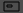
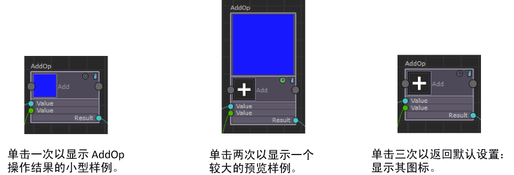
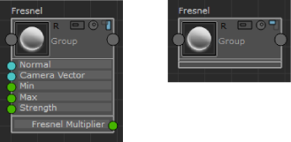
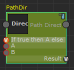

每个节点在其右上角最多有三个图标。图标如下所述，从左侧最远处开始：
组
注： 仅适用于“Shaderfx 着色器”(Shaderfx Shader)网络。
单击组节点顶部的“分组”(Group)图标可查看其组内容。
若要退出组模式，请单击“ShaderFX”编辑器左上角的“退出组”(Exit Group)。
注： 对于系统节点（即 Maya 附带的节点），此图标仅在高级模式下显示（从 ShaderFX 菜单栏中选择“设置 > 切换高级模式”(Settings > Toggle Advanced Mode)）。此图标对您创建的组始终可用。
此图标仅可用于具有内部网络的节点；例如，组节点或纹理节点。
预览样例
单击每个节点顶部的“渲染样例”(Render Swatch)图标 可循环显示：其图标、其小渲染样例以及其大型渲染样例。
可循环显示：其图标、其小渲染样例以及其大型渲染样例。
在以下示例中，首次单击“渲染样例”(Render Swatch)图标将显示 AddOp 操作结果的小样例。第二次单击“渲染样例”(Render Swatch)将显示较大的预览样例。第三次单击“渲染样例”(Render Swatch)将返回显示其图标。
利用此功能可以方便地可视化和调试着色图表。

视图模式
单击每个节点顶部的“隐藏输入和输出”(Hide Inputs and Outputs)图标可在显示节点属性和隐藏输入/输出以获得更精简的节点视图之间切换。

R
注： 仅适用于“Shaderfx 着色器”(Shaderfx Shader)网络。
从磁盘引用的节点标有一个 R 符号。
所需的输入
需要输入的端口的轮廓呈红色。
